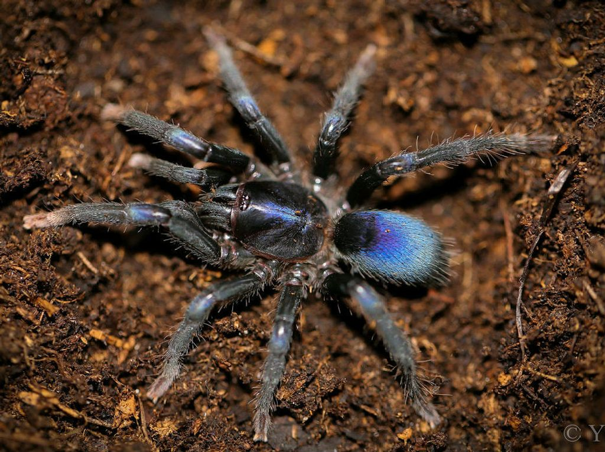

Tarantulas
The tarantula spider are found in the south of Italy.
Scarlet Bird-eater
The Scarlet Bird-Eater can be skittish and nervous when young, but usually become mellow as they age. Some hobbyists even consider handling them.
Body & Life
The tarantula's mouth is located under its chelicerae on the lower front part of its prosoma. The mouth is a short, straw-shaped opening that can only suck, meaning that anything taken into it must be in liquid form. Prey with large amounts of solid parts, such as mice, must be crushed and ground up or predigested, which is accomplished by coating the prey with digestive juices secreted from openings in the chelicerae. The tarantula's digestive organ (stomach) is a tube that runs the length of its body. In the prosoma, this tube is wider and forms the sucking stomach. When the sucking stomach's powerful muscles contract, the stomach is increased in cross-section, creating a strong sucking action that permits the tarantula to suck its liquefied prey up through the mouth and into the intestines. Once the liquefied food enters the intestines, it is broken down into particles small enough to pass through the intestine walls into the hemolymph (blood stream), where it is distributed throughout the body. After feeding, the leftovers are formed into a small ball by the tarantula and thrown away. In a terrarium, they often put them into the same corner.
The tarantula lifecycle is the same as all spiders. They begin as eggs, before moving on to spiderlings, then eventually adults. The eggs are kept safe in a tough silk sac in burrows, created by the mother. Up to 3,000 eggs can come from one birth cycle!
A tarantula's central nervous system (brain) is located in the bottom of the inner prosoma. A tarantula perceives its surroundings primarily via sensory organs called setae (bristles or spines, sometimes referred to as hairs). Although a tarantula has eight eyes like most spiders, touch is its keenest sense, and in hunting, it primarily depends on vibrations given off by the movements of its prey. A tarantula's setae are very sensitive organs and are used to sense chemical signatures, vibrations, wind direction, and possibly even sound. Tarantulas are also very responsive to the presence of certain chemicals such as pheromones. Close-up of a tarantula's eyes The eyes are located above the chelicerae on the forward part of the prosoma. They are small and usually set in two rows of four. Most tarantulas are not able to see much more than light, darkness, and motion. Arboreal tarantulas generally have better vision compared with terrestrial tarantulas.
Big & small
Goliath Birdeater
The Goliath bird-eating tarantula is the biggest tarantula in the world. The body measures up to 4.75 inches (12 centimeters) with a leg span of up to 11 inches (28 centimeters).
Dwarf Tarantula
Dwarf tarantulas, as the name indicates, appear very similar to tarantulas, but are physically much smaller. Many specimens are smaller than 1 cm in length, and the largest in the family are seldom larger than 2 cm.
Facts
The Goliath bird-eating tarantula is the largest spider on Earth.
Scientists aren't sure why some tarantulas are an amazing shade of blue.
Some people in South America roast tarantulas and eat them.
There are some 900 species of tarantulas.
All tarantulas can produce silk, which they use to line their burrows.
To learn more about this incredible species,click here